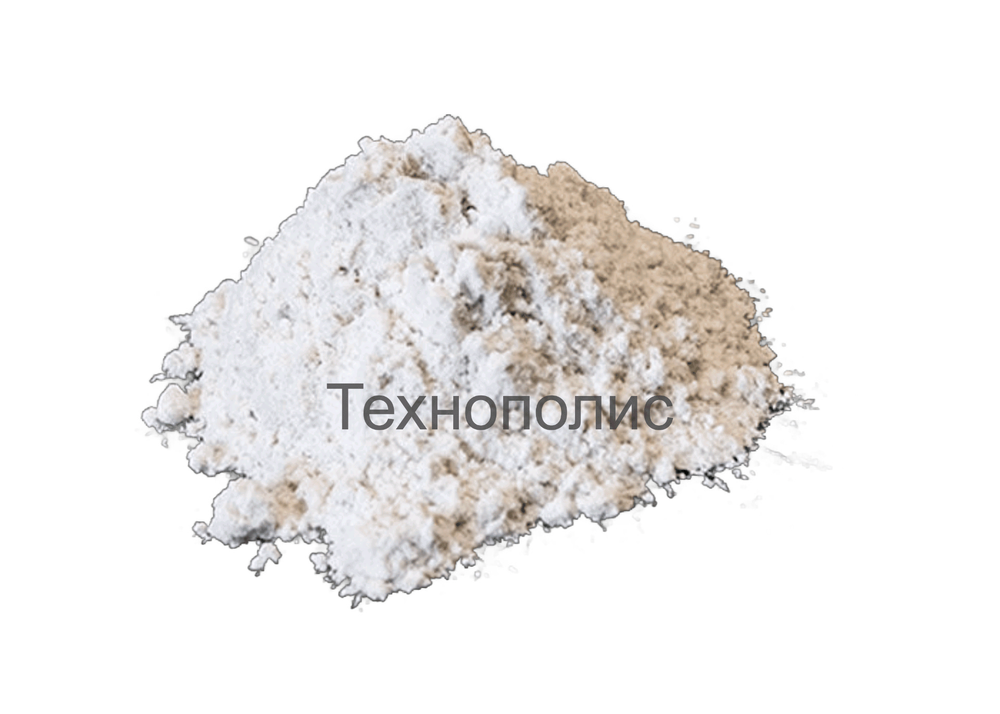
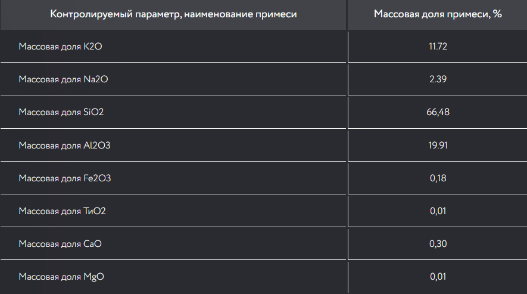

Шпат калиевый

Шпат полевой калиевый порошок полевого шпата представляет собой алюмосиликатный минерал, состоящий
из калия, натрия, кальция, бария и других щелочных или щелочноземельных металлов. Его основными
компонентами являются SiO2, Al2O3, K2O, Na2O, CaO и так далее. В классической геологической
классификации они относятся к силикатам.
Применение полевого шпата
Среди наиболее известных областей применения:
- — Металлургия
- — Изготовление керамики
- — Легкие абразивы
- — Абразивы
- — Ангобы и глазури
- — Электрофарфор
- — Кирпич
- — Керамическая посуда
- — Плитка
- — Санфаянс
- — Фритта
